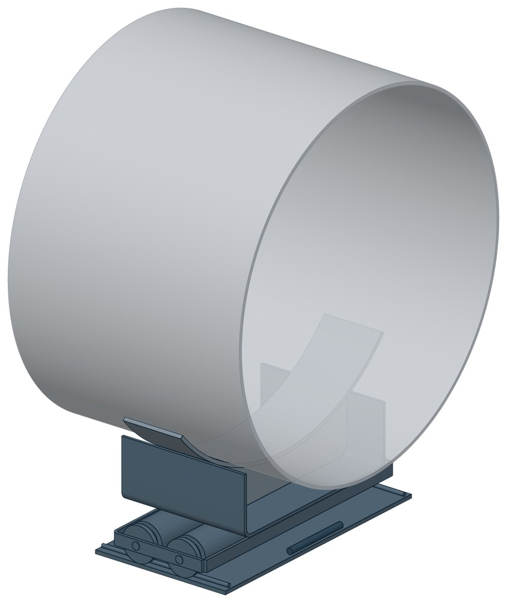
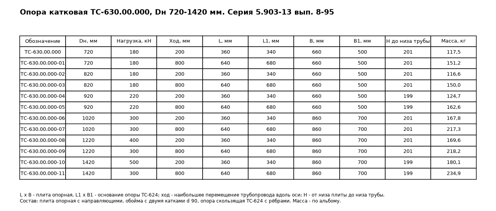

Катковые опоры ТС-630
Катковая опора для больших диаметров: приварная скользящая опора стоит на обойме с двумя катками, катки катятся по опорной плите с направляющими и упорами. Высота от низа плиты до низа трубы — 200 мм.

- Диаметр трубы Dн
- 720–1420 мм
- Документ
- Серия 5.903-13 вып. 8-95
- Исполнений
- 12
- Допустимая вертикальная нагрузка
- до 500 кН
- Масса
- 116,63–234,9 кг
- 3D-модели
- у всех исполнений
Применение и монтаж
Назначение: где применяется
Трубопроводы тепловых сетей Dн 720–1420 мм. Вертикальная нагрузка от 180 до 500 кН. Наибольшее перемещение трубопровода — 200 или 800 мм, осевое или боковое. По СП 124.13330.2012, п. 10.34 катковые опоры ставят на трубах диаметром 200 мм и более при осевом перемещении, при прокладке в тоннелях, на кронштейнах, на отдельно стоящих опорах и эстакадах. В районах с сейсмичностью 8 и 9 баллов катковые опоры не допускаются (п. 16.11).
Монтаж: как устанавливается
Плиту ставят на опорную конструкцию, на плиту — обойму с катками, на катки — опору. Подушки опоры приваривают к трубе. На основании опоры приварены два продольных ребра; ход обоймы ограничен упорами плиты.
Отличия от соседних типов
Труба перемещается в двух направлениях или диаметр меньше 720 мм — двухъярусная ТС-628 (от 194 мм, ход до 400 мм). Катковые опоры по условиям не проходят — скользящая ТС-624: она же служит верхней частью ТС-630.
Габаритная схема ТС-630

Состав комплекта на одну опору
| Опора скользящая приварная ТС-624, высота 100 мм | 1 шт. |
| Ребро | 2 шт. |
| Обойма с двумя катками | 1 шт. |
| Плита опорная с направляющими и упорами | 1 шт. |
Таблица исполнений ТС-630
| Обозначение | Код ПРОМБУРГ | Dнмм | Допустимая вертикальная нагрузкакН | Δ maxмм | Ширина Вмм | Ширина В1мм | Высота Нмм | Длина Lмм | Длина L1мм | Массакг | 3D |
|---|---|---|---|---|---|---|---|---|---|---|---|
| ТС-630.00.000 | ПБ-630-0720-1 | 720 | 180 | 200 | 660 | 500 | 200 | 360 | 340 | 117,49 | 3D |
| ТС-630.00.000-01 | ПБ-630-0720-2 | 720 | 180 | 800 | 660 | 500 | 200 | 640 | 680 | 151,15 | 3D |
| ТС-630.00.000-02 | ПБ-630-0820-1 | 820 | 180 | 200 | 660 | 500 | 200 | 360 | 340 | 116,63 | 3D |
| ТС-630.00.000-03 | ПБ-630-0820-2 | 820 | 180 | 800 | 660 | 500 | 200 | 640 | 680 | 149,99 | 3D |
| ТС-630.00.000-04 | ПБ-630-0920-1 | 920 | 220 | 200 | 660 | 500 | 200 | 360 | 340 | 124,69 | 3D |
| ТС-630.00.000-05 | ПБ-630-0920-2 | 920 | 220 | 800 | 660 | 500 | 200 | 640 | 680 | 162,62 | 3D |
| ТС-630.00.000-06 | ПБ-630-1020-1 | 1020 | 300 | 200 | 860 | 700 | 200 | 360 | 340 | 167,79 | 3D |
| ТС-630.00.000-07 | ПБ-630-1020-2 | 1020 | 300 | 800 | 860 | 700 | 200 | 640 | 680 | 217,28 | 3D |
| ТС-630.00.000-08 | ПБ-630-1220-1 | 1220 | 400 | 200 | 860 | 700 | 200 | 360 | 340 | 169,63 | 3D |
| ТС-630.00.000-09 | ПБ-630-1220-2 | 1220 | 300 | 800 | 860 | 700 | 200 | 640 | 680 | 218,22 | 3D |
| ТС-630.00.000-10 | ПБ-630-1420-1 | 1420 | 500 | 200 | 860 | 700 | 200 | 360 | 340 | 180,07 | 3D |
| ТС-630.00.000-11 | ПБ-630-1420-2 | 1420 | 300 | 800 | 860 | 700 | 200 | 640 | 680 | 234,9 | 3D |
Чтобы заказать, сообщите обозначение и код ПРОМБУРГ: +7 (499) 325-51-35, promburg@yandex.ru.
Нормативные документы
- Серия 5.903-13 вып. 8-95 Опоры трубопроводов подвижные. Рабочие чертежи (PDF, 199 с.) — документ, по которому изготавливается изделие
- СП 124.13330.2012 Тепловые сети. Актуализированная редакция СНиП 41-02-2003
Связанные позиции
- Соседний тип: ТС-628 — катковая двухъярусная
На трубу Dн 720–1420 мм в каталоге
Позиции каталога с исполнениями на те же наружные диаметры трубы.
Детали трубопровода
- Днище стальное эллиптическое общих Dн: 6
- Фланец стальной плоский приварной общих Dн: 6
- Фланец стальной воротниковый общих Dн: 5
- Отвод стальной крутоизогнутый 90° общих Dн: 4
- Отвод стальной крутоизогнутый 90°, 09Г2С общих Dн: 2
Компенсаторы
- Компенсатор сильфонный стартовый СК общих Dн: 6
- Компенсатор сильфонный 2ОПКР общих Dн: 5
- Компенсатор сильфонный 2ОПКР (ИЯНШ) 2ОПКРИ общих Dн: 5
- Компенсатор сильфонный 2СКУ.М 2СКУМ общих Dн: 5
- Компенсатор сильфонный 2СКУ.М (ИЯНШ) 2СКУМИ общих Dн: 5
- Компенсатор сильфонный 2СКУ.ППМ (ИЯНШ) 2СКУППМИ общих Dн: 5
- Компенсатор сильфонный КС общих Dн: 5
- Компенсатор сильфонный КСО общих Dн: 5
- Компенсатор сильфонный КСО (ИЯНШ) КСОИ общих Dн: 5
- Компенсатор сильфонный КСОФ общих Dн: 5
- Компенсатор сильфонный ОПКР общих Dн: 5
- Компенсатор сильфонный ОПКР (ИЯНШ) ОПКРИ общих Dн: 5
- Компенсатор сильфонный сейсмический общих Dн: 5
- Компенсатор сильфонный СКУ.М СКУМ общих Dн: 5
И ещё 14 типов — в оглавлении каталога.
Другие опоры и подвески
- Опора неподвижная двухупорная ТС-660 общих Dн: 6
- Опора неподвижная четырёхупорная ТС-661 общих Dн: 6
- Опора неподвижная двухупорная усиленная ТС-663 общих Dн: 6
- Опора неподвижная четырёхупорная усиленная ТС-664 общих Dн: 6
- Опора неподвижная щитовая ТС-666 общих Dн: 6
- Опора неподвижная щитовая усиленная ТС-667 общих Dн: 6
- Опора неподвижная боковая ТС-668 общих Dн: 6
- Опора неподвижная бугельная с корпусом ТС-671 общих Dн: 6
- Опора скользящая приварная ТС-624 общих Dн: 6
- Опора скользящая хомутовая ТС-626 общих Dн: 6
И ещё 51 тип — в оглавлении каталога.
Другие типы раздела
Скользящие и катковые опоры тепловых сетей (ТС-623…ТС-632)
- Опора скользящая приварная ТС-623
- Опора скользящая приварная ТС-624
- Опора скользящая с плоским хомутом ТС-625
- Опора скользящая хомутовая ТС-626
- Опора скользящая бугельная ТС-627
- Опора катковая двухъярусная ТС-628
- Опоры сварных отводов ТС-631
- Опорные плиты диэлектрические ТС-632
Частые вопросы
Чем неподвижная опора отличается от подвижной?
Неподвижная закрепляет трубу в одной точке и принимает усилия от температурного расширения, давления и трения. Подвижная держит вес трубы и даёт ей перемещаться при нагреве. Неподвижные делят трассу на участки компенсации, подвижные стоят между ними. Место и тип каждой опоры задаёт проект.
Скользящая или катковая опора?
По СП 124.13330.2012 (п. 10.34) скользящие опоры применяют при всех способах прокладки и для всех диаметров труб. Катковые — для труб диаметром 200 мм и более при осевом перемещении, при прокладке в тоннелях, на кронштейнах, на отдельно стоящих опорах и эстакадах. Катковая опора снижает силу трения, которая передаётся на неподвижные опоры.
На каком расстоянии ставить опоры?
По СП 124.13330.2012 (п. 10.5) максимальные расстояния между подвижными опорами на прямых участках определяют расчётом на прочность и по допускаемому прогибу. Готового шага «по диаметру» норматив не даёт: пролёт задаёт проект.
Какую нагрузку выдерживает опора?
Допускаемая нагрузка задана в таблице для каждого исполнения — она в первой группе колонок каждой карточки. Хомутовая ТС-659 — осевая Q от 5 до 25 кН, щитовая ТС-666 — от 50 до 3300 кН, хомутовая с корпусом ТС-670 — Q до 380 кН и боковая T до 200 кН.
В старом проекте нагрузка в тс, а здесь в кН. Как сравнить?
Серия 4.903-10 даёт нагрузки в тонна-силах, серия 5.903-13 — в килоньютонах. 1 тс = 9,81 кН, то есть 10 тс — это около 98 кН. В таблицах каталога переключатель единиц пересчитывает значения.
Что указать в заявке, чтобы получить цену без уточнений?
Обозначение с номером исполнения или код ПБ, количество, Dн и стенку трубы, расчётную температуру наружного воздуха, покрытие, город доставки и желаемый срок. Кнопка «В заявку» в таблице собирает спецификацию, которую можно выгрузить в Excel или отправить письмом.